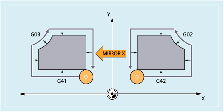

Werkzeugradiuskorrektur
Die Steuerung stellt mit dem Befehl MIRROR/AMIRROR automatisch die Richtung der Werkzeugradiuskorrektur entsprechend der veränderten Bearbeitungsrichtung um (G41 → G42 bzw. G42 → G41). Gleiches gilt für den Kreisdrehsinn (G02 → G03 bzw. G03 → G02).
| Hinweis |
Wenn nach MIRROR eine additive Drehung mit AROT programmiert wird, muss fallweise mit umgekehrten Drehrichtungen (positiv/negativ bzw. negativ/positiv) gearbeitet werden. Spiegelungen in den Geometrieachsen werden von der Steuerung selbsttätig in Rotationen und ggf. Spiegelungen der durch Maschinendatum einstellbaren Spiegelachse umgerechnet. Dies gilt auch für einstellbare Nullpunktverschiebungen. |
Spiegelachse
In der Standardeinstellung wird um die programmierte Achse gespiegelt.
Davon abweichend kann sich die Spiegelung auch immer auf eine feste Achse beziehen, wenn das folgende Maschinendatum ungleich null gesetzt ist:
MD10610 $MN_MIRROR_REF_AX = <Wert>
Wert | Bedeutung |
|---|---|
0 | Es wird um die programmierte Achse gespiegelt (Standardeinstellung). |
1 | X-Achse ist Bezugsachse Mit dieser Einstellung werden Spiegelungen wie folgt realisiert:
|
2 | Y-Achse ist Bezugsachse Mit dieser Einstellung werden Spiegelungen wie folgt realisiert:
|
3 | Z-Achse ist Bezugsachse Mit dieser Einstellung werden Spiegelungen wie folgt realisiert:
|
Interpretation der programmierten Werte
Die Interpretation der programmierten Werte ist abhängig von der Einstellung des Maschinendatums:
MD10612 $MN_MIRROR_TOGGLE = <Wert>
Wert | Bedeutung |
|---|---|
0 | Toggle-Funktion wirksam (Standardeinstellung) |
1 | Programmierte Achswerte werden ausgewertet:
|